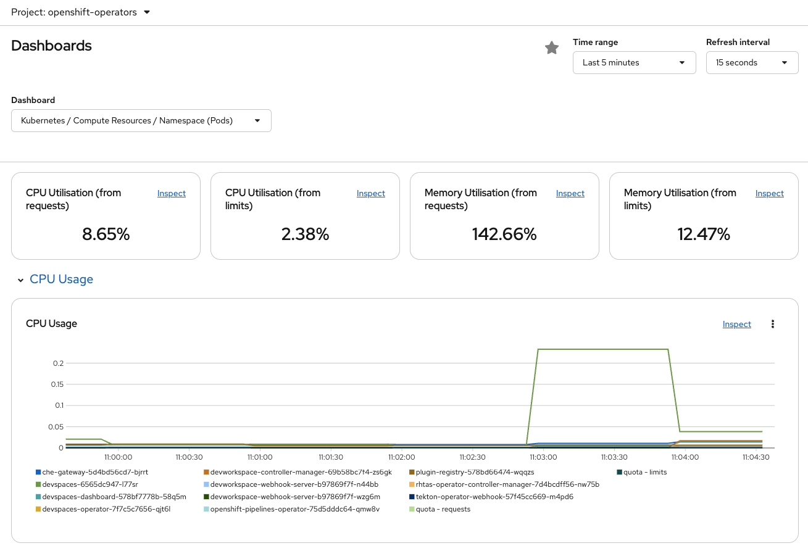
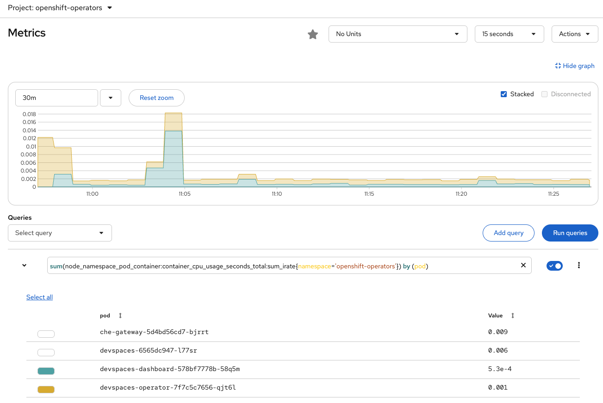

Monitoring
Dashboard
The DevSpaces instance on the cluster can be monitored using the installed OpenShift observability capabilities. On the left hand side of the OpenShift web user interface select the 'Observe' menu and then select the 'Dashboards' option. Ensure that the project into which DevSpaces was installed is selected, which for the workshop will be 'openshift-operators'.
From the Dashboard menu shown below you can select different views of metrics regarding the DevSpaces instance.

The Dashboards drop down menu allows you to select the following displays :
-
Namespaces (pods) - View the statistics and charts broken down by pods in the namespace.
-
Namespaces (workloads) - View the statistics and charts broken down by deployments in the namespace.
-
Pod - View the statistics and charts of an individual pod and select the specific pod of interest in a new dropdown list that appears.
-
Workload - View the statistics and charts of an individual deployment and select the specific deployment of interest in a new dropdown list that appears.
Whichever selection is made from the above it is possible to scroll the screen down further to see textual charts of information on CPU consumption, memory usage charts, memory usage against quota, network bandwidth and dropped packets.
Metrics
The metrics view allows promQL queries to be constructed from the graphical selections made on screen or the queries can be hand written by users who are familiar with the syntax. An example of this is shown below in which just two pods have been selected to view a graph of their CPU consumption. In cases where the namespace has a lot of pods running within it this metrics view allows the user to select a subset of pods. The 'namespace - pods' view mentioned above in the dashboard section can lead to too much data being displayed on the screen.
Additional queries can be added to the metrics section to display a number of specific charts of interest.
